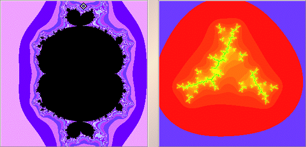
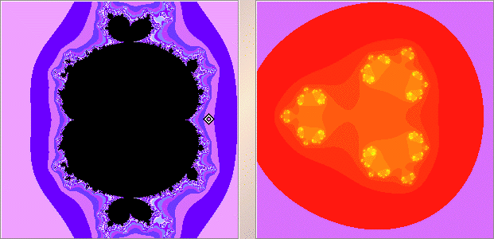

| 2. (a) Here are two examples. Although M(0) is pictured, by comparing the pictures of M(0) and M(-1) we see the selected points lie outside both. |
|  |
|  |
| So for points lying outside both M(-1) and M(0), the Julia set appears to be a Cantor set. |
Return to Exercises.